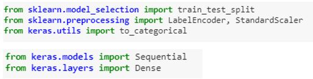
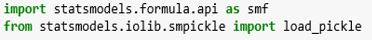
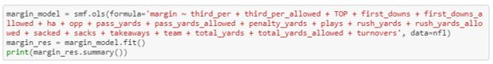
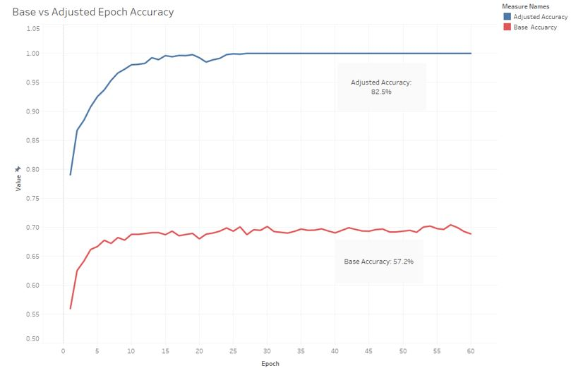
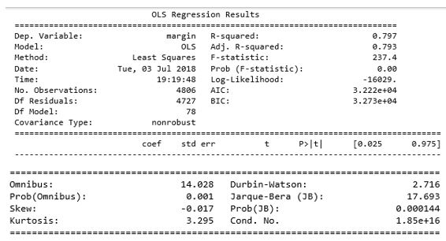

Home Page / How It Works
Beating The Spread: How Does It All Work?
Our machine learning model allows you to predict the winner and the margin of victory between any two NFL teams at any given time! Our models have integrated NFL stats and outcomes from 2009-2017 regular and postseason games to a tested accuracy score over 82% and an R2 score .797
In our head to head model we utilized the following Python libraries for Deep Neural Network:
We used data from 2009-2015 to train the data and used 2015-2017 matchups as the testing set. We initially used historical wins and losses to determine baseline targets:
Base Neural Network - Loss: 1.15, Accuracy: 0.561
In order to improve the model, we incorporated historical stats which consisted of yards, turnovers, 3rd down %, sacks and other elements. Using stats to predict outcomes tremendously improved the model as we saw accuracy improve nearly 47%:
Adjusted Neural Network - Loss: 1.38, Accuracy: 0.822
Learning Index
We also incorporated a multivariable Regression model with the OLS package from the StatsModels library in Python. This model predicts margin, total points scored in a game and uses both of these to predict a final score in a game given the same stats as the logistic regression.
For the score model, we used the same 2009-20017 data set comparing actual margins, total points, points for and points against with their respective prediction and graphed the residuals. Each team is overlaid so that we can see which team we are the most and least accurate with, if we wanted to. The regression output of our margin of victory we have an R score of 0.797
 The coefficient values are then used against each variable to determine the predicted margin of victory for each match up using the input below:
Good Luck! *This site is for entertainment purposes only, if you do decide to gamble, please do so responsibly*